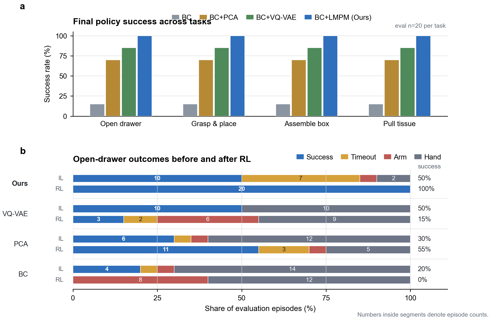
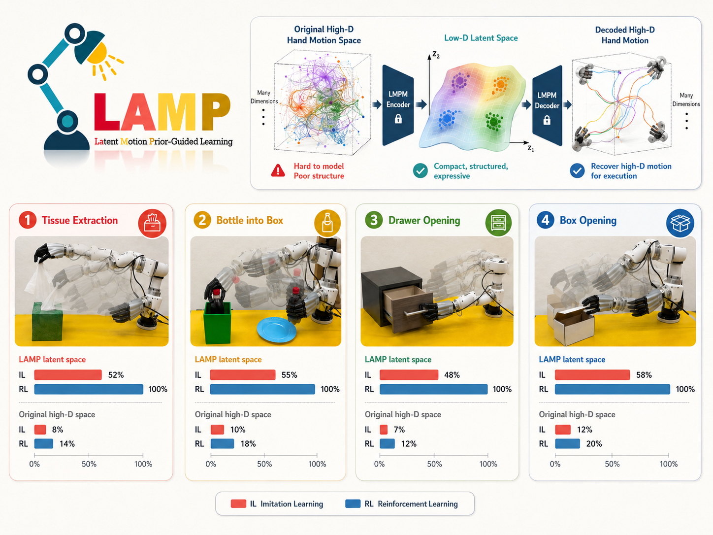
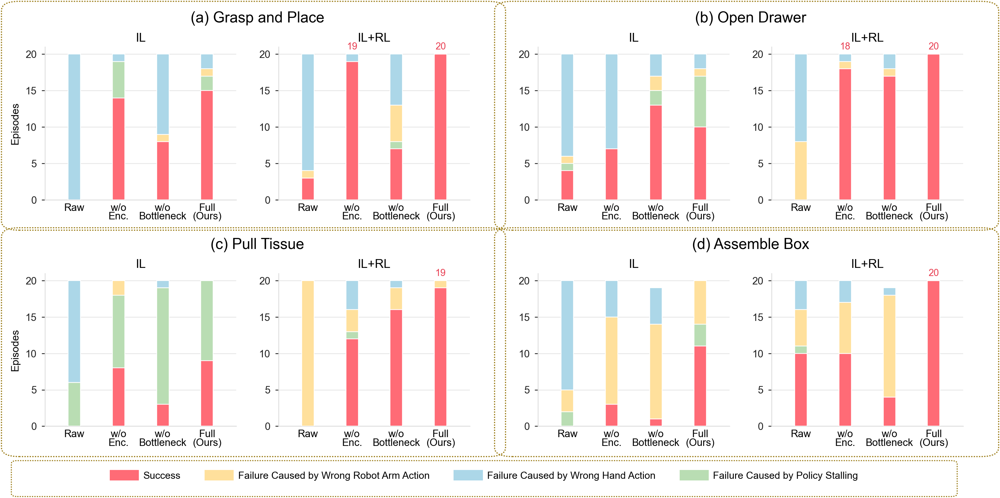

Learn LMPM
A latent motion prior model encodes recent hand-action history into a local Gaussian prior and decodes latent samples back into executable hand targets.
Real-World Dexterous Manipulation
Latent Motion Prior-Guided Real-World Learning for Dexterous Hand Manipulation
LAMP learns a compact, history-conditioned hand-action prior, then uses the same decodable latent interface for imitation learning and online residual reinforcement learning on real hardware.
Core Idea
High-DoF hand actions make real-world RL brittle: random finger perturbations break contact, tilt objects, and waste hardware trials. LAMP keeps the robot arm in its native command space, but routes the dexterous hand through a low-dimensional latent motion prior learned from demonstrations.
Method
A latent motion prior model encodes recent hand-action history into a local Gaussian prior and decodes latent samples back into executable hand targets.
Behavior cloning predicts native arm commands and latent hand offsets around the current prior center, reducing raw joint regression burden.
Online residuals update the arm directly and adjust the hand in the same latent space, keeping exploration near demonstrated, contact-consistent motion.


Real Robot Results


Cloud Drive Videos
Prior-guided residuals keep the bottle upright while the arm places it into the narrow box.
A linear hand subspace helps, but residuals can still decode to contact-breaking finger motion.
The hand maintains a stable pinch on the small handle while the arm pulls through the drawer stroke.
Discrete code switches make contact less smooth during residual refinement.
Continuous latent residuals adapt to changing tissue geometry while preserving the grasp.
Compression improves the initial policy, but the fixed linear basis lacks a local motion prior.
Exploration outside the motion manifold repeatedly breaks contact before useful rewards arrive.
A long-horizon insertion task where local residuals matter most after early contact.
The latent prior gives behavior cloning a strong initialization before online improvement.
Expanding the hand space leaves more room for residuals to move away from contact-consistent motions.
Discrete hand-action codes can improve over raw control, but jumps limit fine contact recovery.
Paper Figures






Release
Citation
@misc{lamp2026,
title = {LAMP: Latent Motion Prior-Guided Real-World Learning for Dexterous Hand Manipulation},
author = {Anonymous Authors},
year = {2026}
}